Bridging edition and corpus: a review of P. S. Post Scriptum: A Digital Archive of Ordinary Writing (Early Modern Portugal and Spain)
Table of Contents
Abstract
The project P. S. Post Scriptum (2012–2017) was aimed at the collection, edition, and analysis of Spanish and Portuguese private letters from the 16th to the early 19th century. As a result, a digital text collection and edition of the letters is presented on the project website. P. S. Post Scriptum can be classified both as a scholarly edition and a diachronic linguistic corpus and can be considered pioneer work in combining procedures from textual criticism together with the linguistic preparation of the corpus, serving the needs of both historians and linguists. Valuable basic work has been done in encoding approximately 5,000 letters which can be downloaded in different formats on the website. Only an open licence for reuse of the data remains desirable and at times the project could have benefitted from an even more advantageous presentation of the results on the website.
Background
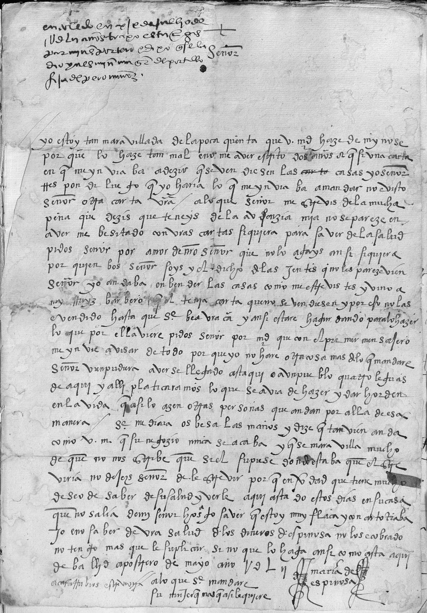
The collection and edition of private letters of this kind has been at the heart of two predecessor projects closely related to P. S. Post Scriptum. The project CARDS Unknown Letters started in 2007 and was aimed at the online edition and study of Portuguese private letters written between 1500 and 1900.4 The second related project started in 2010 and is called FLY Forgotten Letters, Years 1900-1974, or FLY Cartas Esquecidas in Portuguese. It has an online presence at http://fly.clul.ul.pt/.5 The letters of FLY were written in the 20th century, in the context of war, migration, imprisonment, and exile. Both the predecessor projects and P. S. Post Scriptum were carried out at the Linguistics Department of the University of Lisbon, the latter starting in 2012. While dealing with letters from different periods of time and contexts, and transmitted in different ways, the general goals of the projects CARDS and FLY were the same and also the methodology was shared. The approaches developed in the precursor projects were in principle continued in P. S. Post Scriptum, but with a different linguistic and regional scope. In P. S. Post Scriptum, the corpus was extended to also include letters from Spain from the Early Modern period. In addition, it was announced that further types of linguistic annotation were to be added.6 In this review, only the results of the P. S. Post Scriptum project are discussed.7
The goals of P. S. Post Scriptum are described on the homepage of the project website as follows:
Within the P. S. (Post Scriptum) Project, systematic research will be developed, along with the publishing and historical-linguistic study of private letters written in Portugal and Spain along the Early Modern Ages. These documents are almost all unpublished epistolary writings made by authors from different social backgrounds. [...] These textual resources often present an (almost) oral rhetoric, treating everyday issues of past centuries in a register that hasn't been easy to study, apart from brief examples. Not only does the P. S. Project present a wide collection of private letters, but it also makes it available as a scholarly digital edition and as an annotated corpus.
What is highlighted here is the relevance of collecting and publishing historical sources that were previously inaccessible to a wider audience, but also their value for the diachronic study of language registers that are rarely documented otherwise. Especially noteworthy is the double goal set for this digital text collection: it is conceived as a scholarly digital edition, but also as a linguistic corpus. This broad scope is reflected in the conception of P. S. Post Scriptum as an inherently interdisciplinary project with a team of linguists and historians from Spain and Portugal. The “Credits” page, which lists members of P. S. Post Scriptum as well as of the CARDS project8, shows the range of fields involved: historical and computational linguists, a teaching researcher, members responsible for linguistic, historiographic, and paleographic survey, experts in digital scholarly editing, conceptionists, and programmers.9
Because of its double goal, P. S. Post Scriptum should be reviewed as both a scholarly digital edition and a linguistic corpus. This project is one of many that don’t easily fit into a taxonomy of scholarly digital resources.10 It is very laudable that the letters in P. S. Post Scriptum are edited critically in order to lay the foundation for research in various disciplines. The project members themselves reflect their multidisciplinary approach:
The advantages that the new technologies offer to the humanities cannot be denied, even if there is a lack of creation of digital tools that are useful for different scholarly disciplines. In general, the editions designed for the philologist and the historian are not exploited by the linguist in the same manner that an annotated corpus would be; and vice versa, the linguistic corpora, conceived first and foremost to obtain statistics and word concordances, are resources of little utility for historical investigation and textual criticism.
In this work we present an already finished research project which incorporates the methodologies of the digital humanities and corpus linguistics to offer an integrative treatment of sources that can be of interest in several fields of study.
Vaamonde sees the new technologies as a type of catalyst fostering the development of tools that are useful to various humanities disciplines and at the same time making a lack of such tools visible. A similar spirit of disciplinary reunification emerging from the digital humanities is formulated by Marquilhas and Hendrickx:
Admittedly, the division of the philological method in the past primarily served as an excuse to define the differences between the modalities of edition which the three areas [linguistics, literary history, and textual criticism] respectively demanded. Now the adoption of digital methods and the creation of resources led to a situation where the “walls” between these areas began to fall, in an exemplary dynamic of interdisciplinarity.
Taking these statements of the project members into account, P. S. Post Scriptum aims to provide fundamental research for the digital humanities as a whole and not just to serve the needs of a single discipline. In this review, P. S. Post Scriptum is thus examined from various perspectives. First, the general structure and contents of the project website are discussed. Following this, the general parameters of P. S. Post Scriptum as a digital text collection are reviewed: the principles of selection of documents and texts, the organization and accessibility of the materials, available metadata and documentation. P. S. Post Scriptum is then assessed as a scholarly digital edition on the one hand and as a linguistic corpus on the other. Finally, the long-term prospects of the entire resource are evaluated.
Website
The website of P. S. Post Scriptum is available in three languages: Portuguese, English – the default, and Spanish. What is translated are the main menu, headings and introductory texts on single pages, and search options, except the XPath options and predefined queries for a syntactic search which are only presented in English. Even the metadata for the letters are partially translated. The metadata categories are available in the three languages. For the metadata values, the language of the letter seems to determine their main language.11 The letter written from María de Espinosa to her husband, for example, is in Spanish, so the summary, context information, etc. are also given in Spanish. That the metadata is in different languages may complicate a machine-based reuse of the data. Still, the summary and context information of each letter can be switched to English.12 In some cases, even the text of the letters themselves is translated. Where this is not the case, a hint is given on how to proceed for automatic translation elsewhere.13 There seems to be no way to search for translated letters, so they can only be found by chance and it is also not possible to find out how many of them have been translated.14 The translations of the letter metadata and text are not directly linked to the main language option of the website, so it is for example possible to have the website in Portuguese and read a letter in English. It is comfortable that the main language can be switched on every subpage of the site and not only from the homepage. All in all, much effort has been put into translations to make the site accessible to readers from Portugal and Spain as well as to an international audience.
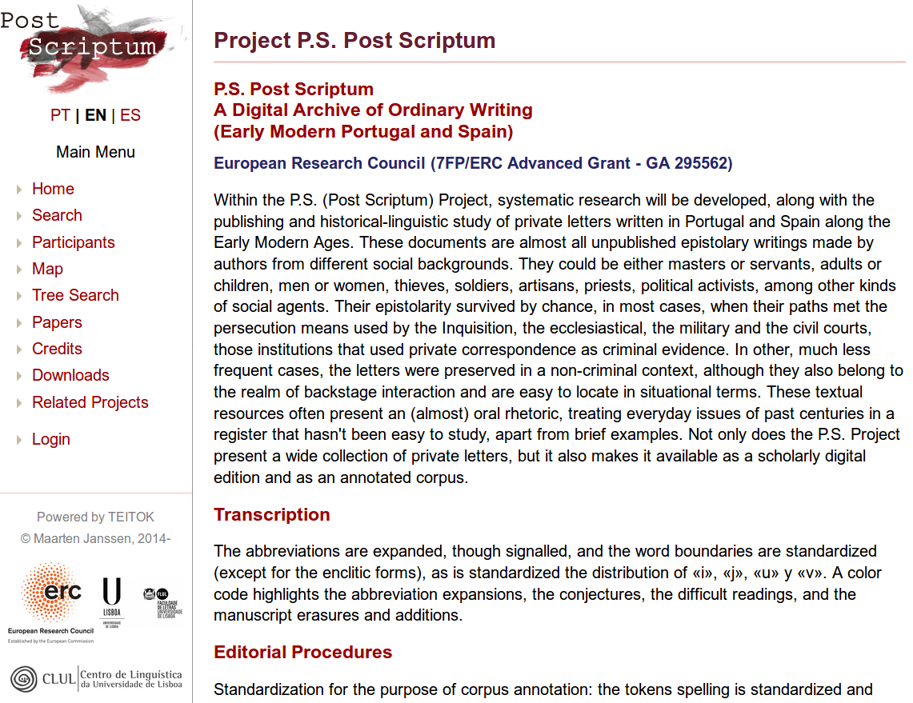
On the page “Related Projects”, a list of links is given which is divided into four categories: “Tools”, “Digital Editions and Historical Corpora”, “Guidelines and tutorials”, and “Networks and Associations”.18 While this is an interesting list, some explanation would have been helpful to know in what way the listed “projects” are related to P. S. Post Scriptum. The mentioned tools (TEITOK, eDictor, CorpusSearch) have probably been used in the project. It is likely that the project is a member of the associations listed (AHDig and REDaiep). But why is the Digital Archive of Letters written by Flemish authors and composers listed under “Guidelines and tutorials” and in what way is the tutorial “Text Processing with Linux” relevant for users of the P. S. Post Scriptum website? Also for the “Digital Editions and Historical Corpora”, the relationship between P. S. Post Scriptum and these other projects is not clear. The predecessor project FLY is listed, but also for example the Mark Twain Project which has probably inspired the methodology of P. S. Post Scriptum in terms of a digital scholarly edition of letters. Another project mentioned is "En el ojo del huracán": Cartas de Ultramar a España, 1823 - Edición digital. The homepage of that project explains that a cooperation between P. S. Post Scriptum and TEITOK has been established and that the 65 letters of the edition have a second user interface at the Linguistics Centre of the University of Lisbon.19 As can be seen, there are various reasons for projects to appear on the “Related Projects” page and a few subheadings or sentences would have helped to clarify the relationships.
The “Papers” subpage lists publications by type (Books, Guidelines, Book Sections, Journal Articles, Conferences) and by year (2012-2017).20 The number of publications produced by the P. S. Post Scriptum team during the project’s funding period is impressive. There are two edited and one authored book, four detailed manuals, 25 book sections, 22 journal articles, and 64 conference papers contributing to various fields such as general linguistics, corpus linguistics, language history, discourse analysis, cultural history, gender studies, and DH.
P. S. Post Scriptum as a digital text collection
Selection of documents and texts
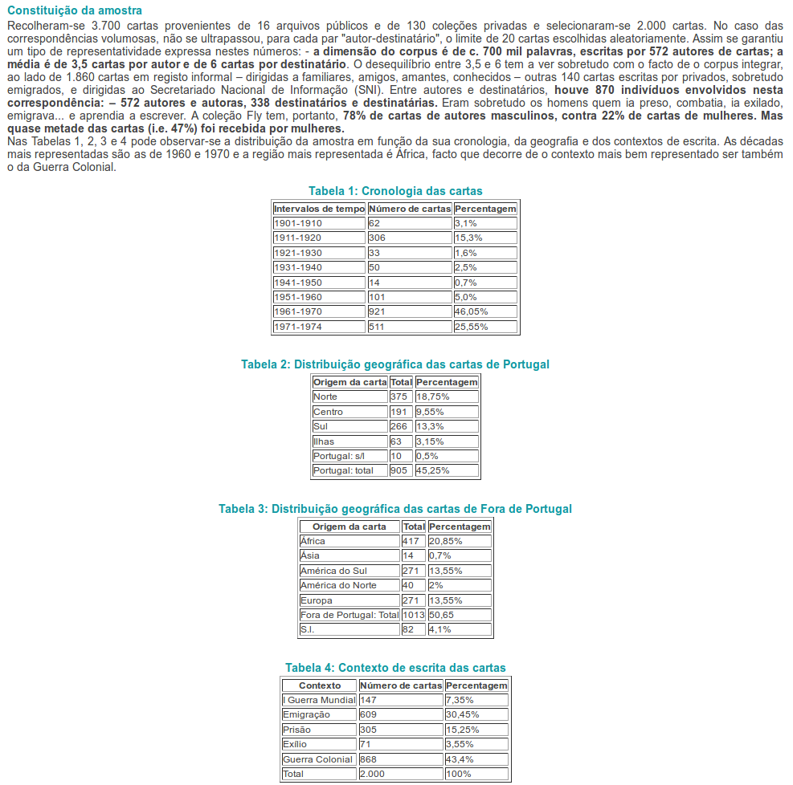
On the website itself, no information is given about the selection criteria for the letters. More information can be found in some of the publications presenting the project, but this is not ideal, for several reasons. First, a user of the website is forced to go through the list of publications and look for those which are concerned with the presentation of the project as a whole. In the case of P. S. Post Scriptum, the project descriptions tend to focus either on the Portuguese or on the Spanish subcorpus, depending on the context of the publication, which makes it harder to get information about the whole collection.22 Then, these publications were written at different points in time so it is hard to know which ones are in line with the current state of the text collection as it is presented online. Also, not all of the publications are Open Access and directly available.23 In the opinion of this reviewer the publications are an important form of scholarly output, but they cannot replace background and context information published directly with the digital text collection. If an external publication is used to document central aspects of the digital resource and can be considered up-to-date, this should be indicated on the website. This is done, for example, for the guidelines describing the data model, the editorial and the annotation procedures, which are all linked to from the homepage, but unfortunately not for the criteria of selection and composition of the corpus.
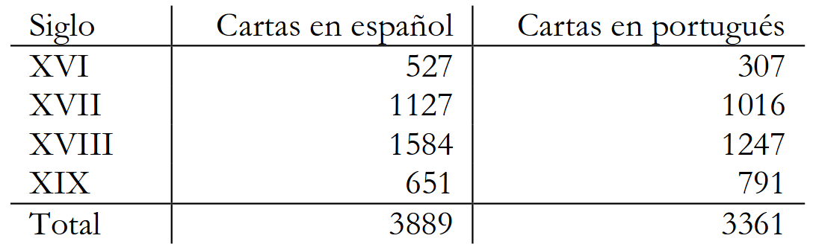
Data model
To assess the data model used in P. S. Post Scriptum, an impressively detailed manual can be consulted following a link on the homepage. The “Guía para la Edición Digital de Textos en P. S. Post Scriptum”24, more than a hundred pages long, was authored by Gael Vaamonde and is also available in an English version25. It is complemented by the “Manual de Edición y Anotación en TEITOK de los Materiales de P. S. Post Scriptum“26 authored by Vaamonde and Catarina Magro, this one only available in Spanish and partly in Portuguese. The data in P. S. Post Scriptum is modelled in XML-TEI and in the first of the two manuals, the entire TEI model is documented, including the TEI header, transcription and editing conventions, changes to the TEI needed for the linguistic annotation, the relationship of the project’s TEI model to TEI-P5, and the separate TEI model for a bibliographic database containing information about the participants of the letters. In the second manual, it is explained how the texts have been treated further as a preparation for linguistic annotation (e.g. modernization and sentence splitting) and how they have been annotated morpho-syntactically. The transcription and editing conventions as well as the linguistic annotations will be reviewed in the corresponding sections on P. S. Post Scriptum as a scholarly digital edition and as a linguistic corpus below. Here, the general data model is discussed.
The data model of P. S. Post Scriptum – at least the project internal model – is not a straightforward and plain TEI model for several reasons. As Vaamonde explains, when the project started in 2012, the TEI had not decided to include specific elements for the encoding of correspondence yet.27 It was therefore decided to follow the model of another project concerned with the edition of letters, the Digital Archive of Letters by Flemish Authors and Composers from the 19th & 20th century (DALF)28. Because the schema used in the DALF project was based on TEI-P4, P. S. Post Scriptum inherited an already outdated version of the standard. In a way, this is an ironic twist: the intention was to take up the ongoing development of a dedicated module for the encoding of correspondence and the project ended up with an older version of the chosen XML standard. A good way out of this dilemma was found, though: the decision to offer a TEI-P5 version as an export format and to use the model adopted from DALF as an internal one. The version of the data model conforming to TEI-P5 was influenced by the schema of the CHARTA (Corpus Hispánico y Americano en la Red: Textos Antiguos) network.29 It is to be valued positively that the P. S. Post Scriptum project looked for models elsewhere in order to learn from the experiences made in other projects, but especially in the case of the DALF’s TEI-P4 model, the question arises why its innovations in terms of correspondence description were not integrated directly into an own TEI-P5 model.
The elements specific for the encoding of correspondence were not the only necessary customization of the schema. To add linguistic annotations to the texts, the tool TEITOK (A Tokenized TEI environment) was used, a web-based platform developed by Maarten Janssen in which both rich textual markup and linguistic annotations can be used in combination in single TEI files.30 The TEI format used by TEITOK includes custom elements for the tokenization and annotation of the text. A third component of the family of data models in P. S. Post Scriptum is a TEI-P4 model inherited from the CARDS project and used for biographical information about the letters’ authors and addressees.31
On the website, each letter can be downloaded in the “Pure TEI P5 XML” export format and in the “TEITOK XML” version based on the internal TEI-P4 schema. In the P5 version, no schema is declared explicitly, so supposedly the encoding follows the TEI_all schema. In the TEITOK version, the internal DTD is linked. No schema file is offered directly on the website and as the XML of the biographic database is not accessible, its schema cannot be reviewed either.
All in all, the combination of different schemas and customizations is a bit confusing for someone not familiar with the project. No explanations are given directly on the website. However, the detailed manual helps the user to follow the history of the project and the complexities of the data model are layed out transparently in these guidelines. Access to all the schema files would have been good to facilitate a formal overview of the structure of the data and especially for reuse scenarios to make consistency checks and schema adaptations possible.
However, apart from how the information on the data model is presented, the will to follow best practices developed in similar projects, the orientation towards standards like the TEI, the thorough documentation of the data model and the possibility to view the XML of the letters on the website are all highly commendable.
Metadata
Each letter edited in P. S. Post Scriptum includes
the general administrative and descriptive metadata that are usually part of
the TEI header. In addition, there are metadata which are specific for
correspondence. The following example shows the correspondence description
of the letter PS7004 including details about the sending and reception
(names of sender and recipient, locations, and dating), in the TEI-P5
version:
The situational context of the letters is given in the setting
description and a summary of their content in the source description. If
there are translations into English, they are stored in the revision
description as part of a change element. One would not expect translations
there, but it might also have been difficult to add the translations in
situ: the setting description could have been doubled, for example, but the
summary element is not allowed to occur more than once in the TEI schema.
Furthermore, the text is classified according to a project specific taxonomy
as can be seen in the following example, also taken from PS7004:
The corresponding taxonomy is specified inside the encoding
description:
Apparently, the “catRef” elements in the text classification point to the type of category declared in the taxonomy, where the category value is given in the description of the type of category. This seems a bit odd, because a category with the same XML-ID can then have a different category description or value in another letter file (for example, if the type is not “pedición”, but a different pragmatic category. Also, it would be good to have insight into the entire taxonomy.
It can furthermore be noticed that some fields are empty (in this example, /location/geo for the destination as well as the category description for “linguisticSource”). It is not clear how many of the metadata fields are empty in the overall collection. In order to know whether empty fields are due to work-in-progress or because a value is not mandatory, the manual has to be consulted as there is no formal schema for the TEI-P5 files available. On the website, no report is given on the state of the XML files.
Besides the metadata for the letters, biographic metadata is collected in the separate demographic database. In the edition manual, it is described in detail how the data about correspondence participants is modelled (for example, the role, sex, and age of a person are given, person names, and a description of the events related to a person). In the letters, there are pointers from the senders and addressees to the external biographic data, but this data is not available for insight or download.
The metadata in P. S. Post Scriptum is rich and conforms to the standards set by the TEI. Points of criticism which can be raised are the missing access to some external metadata (the biographic database and the complete taxonomy) and a report on the completeness of the data.
Organization, accessibility, and usage possibilities
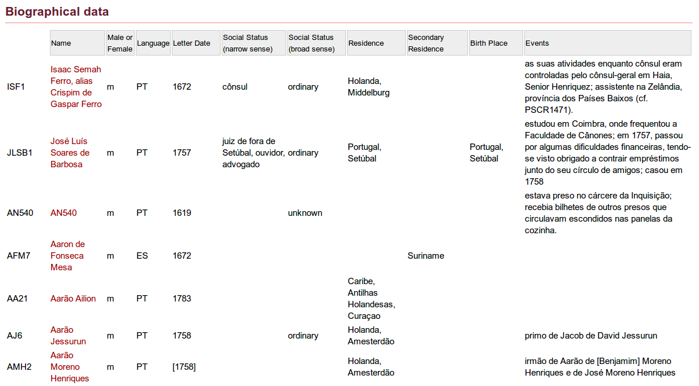
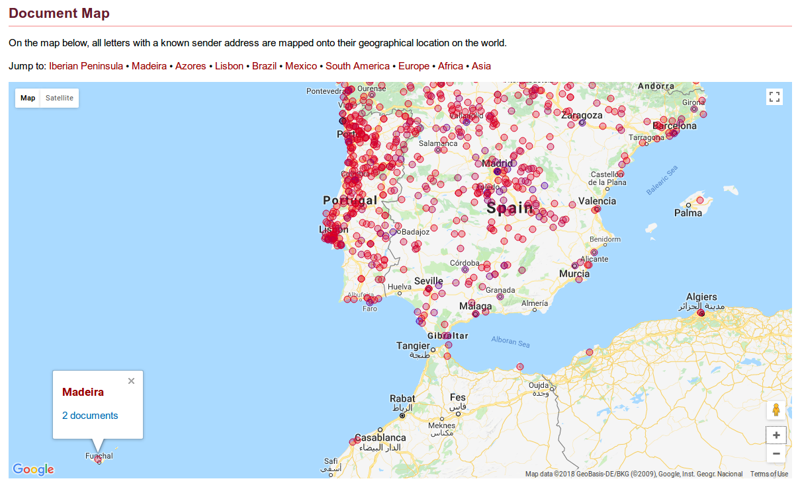
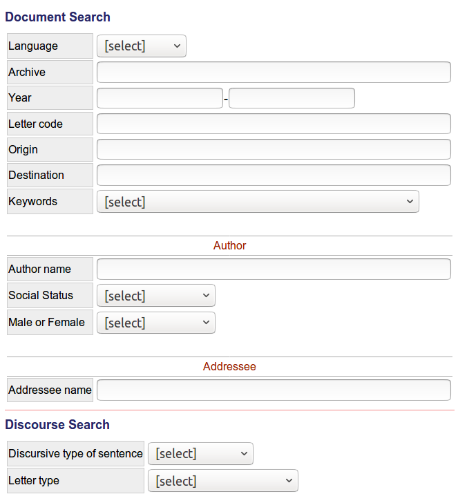
The document search allows to look for letters by language,
archive, year (or a range of years), letter code, origin, destination, or by
a list of thematic keywords (e.g. “Agriculture”, “Masonry”, “Church”). Only
one of the keywords can be chosen. Documents can also be searched for with
the names of the author or addressee and the social status and gender of the
author. A help section with further information about the search options is
available. The search is well-documented and easy to use. When the document
search is performed, the results are displayed in tabular format. The query
is automatically transformed into a Corpus Query Processor
(CQP) string which is shown together with the search results. The following
string, for example, represents a search for letters in Portuguese written
by female authors up to the year 1600, yielding 55 results:
Beyond the powerful search functions, more browsing options could have been offered. The only ways to browse the collection are the biographic database and the geographic map, but this archive of letters would have had much more to offer. Full indexes of the letters, for example by identifier, year, place, etc., could have been implemented without much additional effort. The search is especially helpful for someone who already knows what she or he is looking for, but for a user interested in the collection as a whole more browsing options would have been helpful to get an overview of what is there. Examples of scholarly digital editions of letters consistently offering both ways of access are Letters of 1916 32, where letters can be browsed by category, month, and author’s gender (see Fig. 8) or the Alfred Escher-Briefedition 33 access the letters.
A great asset of P. S. Post Scriptum is the “Downloads” page.34 It is not yet usual that full access to the data underlying an online publication of a text collection is offered, even if it should be expected and is desirable. The RIDE statistics on this topic are still quite disillusioning and fortunately P. S. Post Scriptum raises the bars on the Yes-side.35 The letters can be downloaded in several formats and compositions:
- in text format, the whole corpus distributed by language, century, and format (original text, standardized text, POS annotated text, PSDX36)
- in text format, the whole corpus distributed by gender, language, century, and format
- in text format, the whole corpus distributed by social status, language, century, and format
- in text format, a balanced37 corpus distributed by language, century, and format
- in XML-TEI-P5, the whole corpus distributed by language and century
- in XML-TEI-P5, a balanced corpus distributed by language and century
With these download options, the data can in principle be reused
in multiple ways going beyond the usage scenarios created for the website.
The data could for example be prepared for integration into the
correspSearch environment, a metadata registry and web
service for scholarly editions of letters.38
However, there is no rights declaration on the “Downloads” page where reuse
is encouraged.39
The facsimiles, on the other hand, are not offered for a bulk download and
the user is asked to request the authorization of the responsable archive
for reuse. Despite the download options for the various text- and XML-based
formats of the letters, reuse of the data is limited by a copyright
statement in the TEI files, reserving the rights on the data for the
Linguistics Centre of the University of Lisbon:
With this general rights declaration it is not clear if the copyright applies to all the content of the TEI files or just to parts of it, e.g. the markup, metadata, or annotations which were added to the texts in the project. One would expect the original, historical content of the letters not to be subjected to copyright. With these contradictory statements other researchers are left in uncertainty: Can they download and use all the data in external tools without asking for permission? Is a publication of the plain text files elsewhere not allowed or does this just apply to the TEI files? A more detailed licensing in the TEI files and on the website would help to clarify which types of reuse are in principle allowed and for which cases a special permission is needed.
Finally, in terms of accessibility and usability of the text collection as a whole, a note on persistent URLs is indicated. The addresses used for the individual webpages are technical addresses, for example http://ps.clul.ul.pt/index.php?action=cqp&act=advanced for the corpus search, http://ps.clul.ul.pt/index.php?action=psdx&act=query for the syntactic search, http://ps.clul.ul.pt/index.php?action=cdd for the biographical data page, and http://ps.clul.ul.pt/index.php?action=edit&cid=PS7004, http://ps.clul.ul.pt/index.php?action=edit&cid=Revistas/ModernizadasTeitok/anotadas_ES/PS7004.xml&tpl=long, or http://ps.clul.ul.pt/index.php?action=edit&cid=Revistas/ModernizadasTeitok/anotadas_ES/PS7004.xml&tpl=translation for the same single letter in different views. Especially for the letters, readable URLs like for example http://ps.clul.ul.pt/letter/PS7004 or http://ps.clul.ul.pt/letter/PS7004/translation would be much better as they would be independent of the technical setup (not referring to a PHP script, for instance), easier to read, and easier to cite.
P. S. Post Scriptum as a scholarly digital edition
Representation of documents and texts
The text of the letters is transcribed and encoded in the TEI body and a detailed description of the elements used can be found in the edition manual, together with a chapter on the transcription and editing conventions. The following changes and additions are applied to the text of the manuscripts when it is transcribed:
- the punctuation is standardized (// and = are for example transcribed as a full stop)
- word boundaries are standardized
- the distribution of “i”, “j”, “u”, and “v” is standardized
- abbreviations are expanded (not silently)
- annotations on margins by external hand are not transcribed as part of the text
- page breaks and line breaks are marked
- additions, deletions, replacements, unclear text and gaps are marked
- underlined text is marked
- necessary conjectures are marked with <supplied>
- hand shifts are marked40
The project members themselves describe their transcription as conservative, respecting many details of the manuscript, so as to serve the goal of P. S. Post Scriptum as a multidisciplinary edition:
In the case of Post Scriptum, we understand that the collected documents are interesting as a source for linguistic data, but also as a source for historical data, and even as objects representing fragments of a practice, produced manually by hundreds of persons who lived at a certain time in the Early Modern Age and who put their daily preoccupations on paper. We are definitely faced with a kind of documentation that can and must be approached from three different perspectives: as an artefact, understood as a physical object; as a text, understood as linguistic content; and as a context, understood as the entirety of historical circumstances associated with the text and the artifact. [...] our work as editors must be a meticulous work striving to preserve every detail of the manuscript.
Another level of the text that is edited are the discursive parts of the letters. In addition to the usual opener and closer, the sentences are classified as either harangue, peroration, or narration, for example the peroration “Que o mesmo Senhor lha conserve [...]” (That the Lord himself shall save her [...]):
Presentation of documents and texts
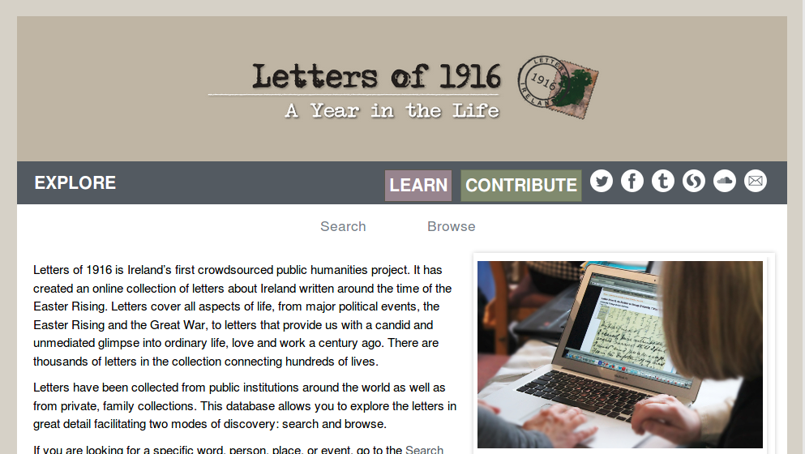
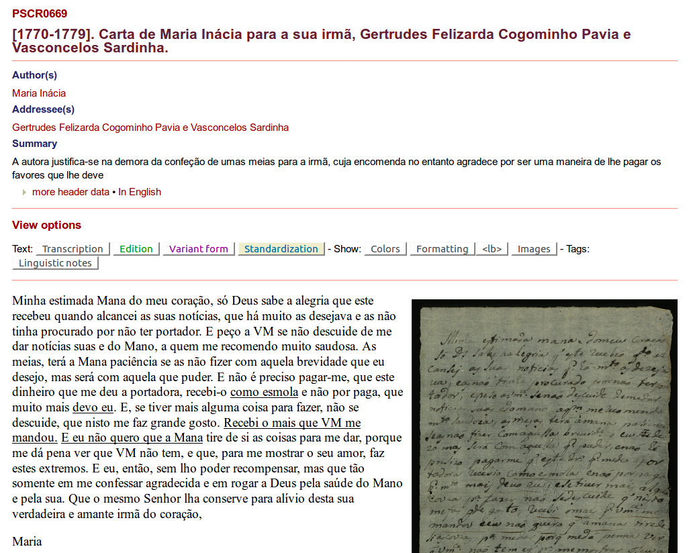
There are two download options at the bottom of each letter page, one for the download of the XML file, either in the TEI-P5 or in the TEITOK version, the other for the download of the current view in a plain text format.
Browsing through various letters, it becomes apparent that not all of them have the same options. Some letter texts are not accompanied by a facsimile (e.g. PSCR5513), some don’t have the detailed POS, lemma, linguistic notes and sentence view options (e.g. PSCR5285), or the variant and standardization views (both PSCR5513 and PSCR5285, for example). As for other aspects mentioned before, it would have been good to have an overview of the editing status of the letters in the whole collection. Another way to make the state of progress more transparent would have been to include search options allowing to look for finalized letters.
Although most of the functions are self-evident, a help text explaining the meaning of the different text views, for example, would have been helpful. If the view options are not documented exhaustively on the website, a user might miss them if she or he by accident only views letters where a few of them are available. It was not clear to the reviewer how to find a letter where all options are available, if not by chance.
Of all the information encoded in the TEI files, the discursive parts of the letters seem to be the only aspect that is not presented. Apart from that, all the different levels of encoding can be assessed via the web interface in a user-friendly manner. In addition, the “Text Search” supports looking for words on the different levels of transcription (provisional transcription, expanded abbreviations, and standardization). Even if the parts of discourse are not taken up into the HTML view, they can still be searched for with the “Discourse Search” which allows to look for letters containing different types of sentences (opener, closer, harangue, peroration, narration, etc.) and for letter types (friendship, love, family, private business and anonymous letters).41
P. S. Post Scriptum as a linguistic corpus
The second side of P. S. Post Scriptum’s double face as a digital scholarly resource is its design and capacity as a linguistic corpus, the goal to compile “an electronic resource which facilitates the statistical exploitation and treatment of the textual data” with corpus linguistic methods as the primary approach.42
Linguistic annotations
Before the several layers of linguistic annotation could be
added to the letters in P. S. Post Scriptum, the texts had to
be normalized. This was achieved through the manual preparation of the
standardized, edited text, as described above. The morphosyntactic
annotation was then done with the package FreeLing for the
Spanish texts and with eDictor for the Portuguese ones.43 Vaamonde reports that it was a challenge to work with a
range of tools providing different output formats that could not be easily
combined, especially the information encoded in TEI with the different
tagger outputs, leading to different versions of the corpus that cannot be
exploited altogether.44
This is a common problem in projects working at the junction of different
disciplines in digital humanities.45 In P. S. Post Scriptum, the solution was to
centralize the linguistic treatment of the corpus in the tool TEITOK which
allows to store and treat both rich textual markup and linguistic
annotations in the same XML format.46 The tokenization, orthographic normalization,
lemmatization, and morphosyntactic annotation were all realized in TEITOK
after the import of the digitally edited TEI. The result is a format similar
to TEI, but with some custom elements and attributes as in the following
example from the letter PS7004:
The original form of each token is kept as the content of the “tok” element. In the “nform” attribute, a normalized version of the token is given. The other attributes serve to hold the lemma, dialectal variants, and so on.47 So the basic unit chosen for the XML version of a letter combining digital edition and corpus is the token or word to which linguistic information is directly added. But the model is also able to keep specific markup from the historical-philological edition. If there is any markup inside a token such as a line break, for example, it is kept. In the case of a span of underlined words, the element to encode the highlighting surrounds several token elements.
From the point of view of this reviewer, it is not just a technical question whether different layers of annotation are kept inside a single file or modelled as stand-off markup. Of course a stand-off setup is more difficult to process because units like sentences or words have to be realigned when several layers of annotation are analyzed or presented together. But to find a way to directly integrate both editorial markup and linguistic annotations also contributes to build a rich resource which can be archived in its integrity. In this scenario, the linguistic annotations become part of the edition and are not just another layer which can be added repeatedly in an ad-hoc way, especially if their quality is checked manually. This is not to say that there aren’t any arguments for stand-off markup, but that the editorial decision on the way to model annotations contributes to define the type of resource that is created, in this case a critically edited linguistic corpus.
In addition to the tokenization and lemmatization, also morphosyntactic annotations and syntactic trees are included in P. S. Post Scriptum. For the morphosyntactic annotations, the EAGLES tagset was used. EAGLES has been developed by an initiative of the European Commission and aims to cover the morphological features of most European languages.48 In P. S. Post Scriptum, the tagset for Spanish has been used in a slightly modified version which is documented and linked to from the homepage – apparently for both the Spanish and the Portuguese subcorpora.49 For the syntactic annotation, the procedures were inspired by the Penn Parsed Corpora for Historical English, the Tycho Brahe Parsed Corpus of Historical Portuguese, and the CLUL-projects Syntax Oriented Corpus of Portuguese Dialects (CORDIAL-SIN) and Word Order and Word Order Change in Western European Languages (WOCcWEL).50 The second manual for P. S. Post Scriptum, the Manual de Edición y Anotación en TEITOK de los Materiales de P. S. Post Scriptum: Edición Modernizada, Anotación Morfosintáctica (POS), Anotación Sintáctica (en portugués) 51 the preparation of the texts for the linguistic annotations, the annotations themselves, and the necessary follow-up works. On the project‘s homepage, it is stated that about 25% of each balanced corpus (a corpus of one letter per author in Portuguese and Spanish, respectively) has been annotated syntactically. For the morphosyntactic annotation, it is not clear to what extent it has been completed. The results of the morphosyntactic annotation are directly incorporated into the XML encoding, as can be seen in the above example, whereas the output formats of the syntactic annotation procedure are in principle text-based. They were converted to the XML-based format PSDX (an XML variant of the Penn Treebank format) and then aligned with the main edition file containing the philological and linguistic information by sentence and token, meaning that the syntactic annotation is kept separately, but correlated.52 The results of both the morphosyntactic and syntactic annotations were revised manually.
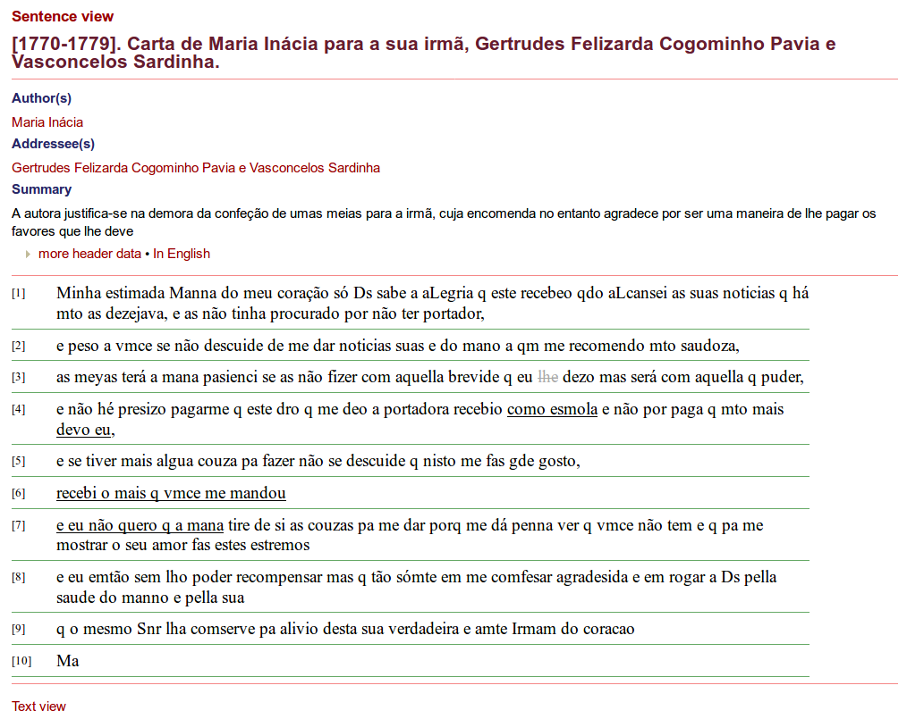
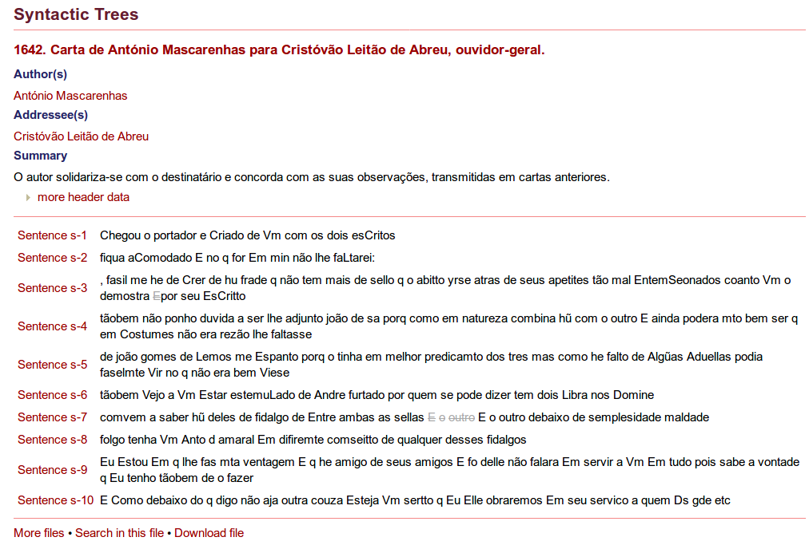
Search options
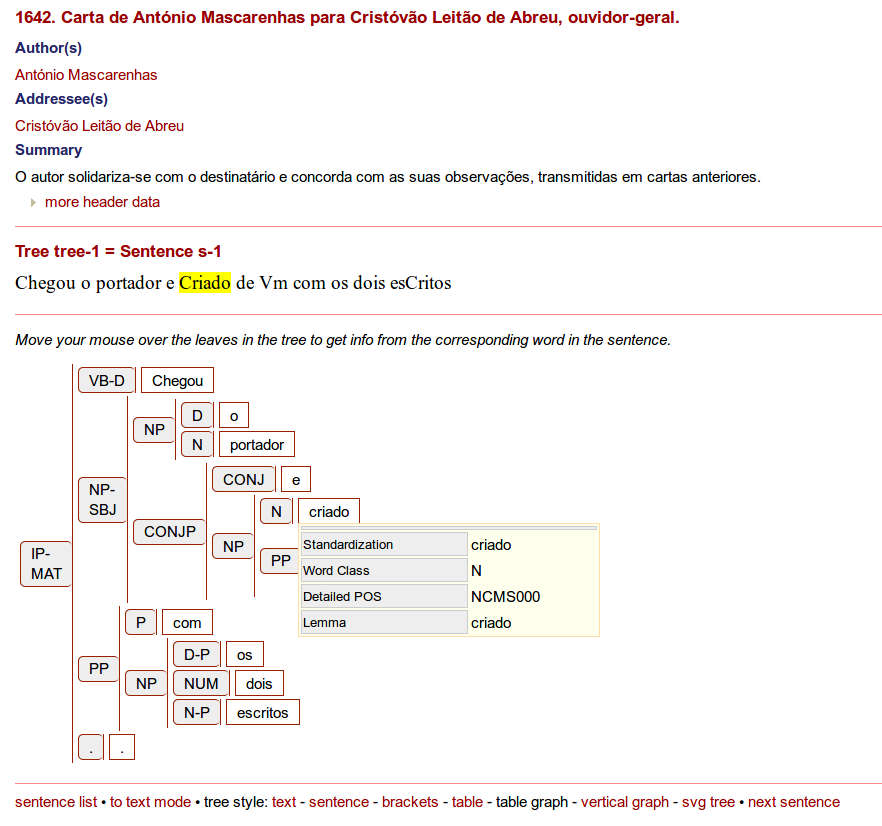 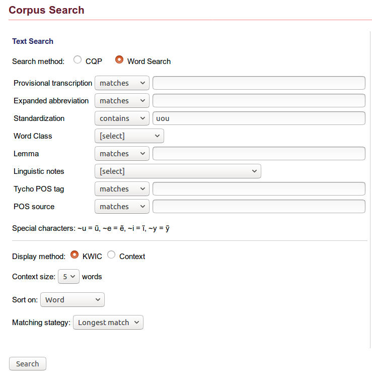
The results page offers further options to display the findings: by clicking on “context”, it is possible to jump to the text of the whole letter and see the search term highlighted in it. Also, the different textual views can be activated for the search results. A “Direct query URL” is given and can be used to cite the search and its results (at this point the technical character of the URL is understandable because it is meant to reflect complex search queries).
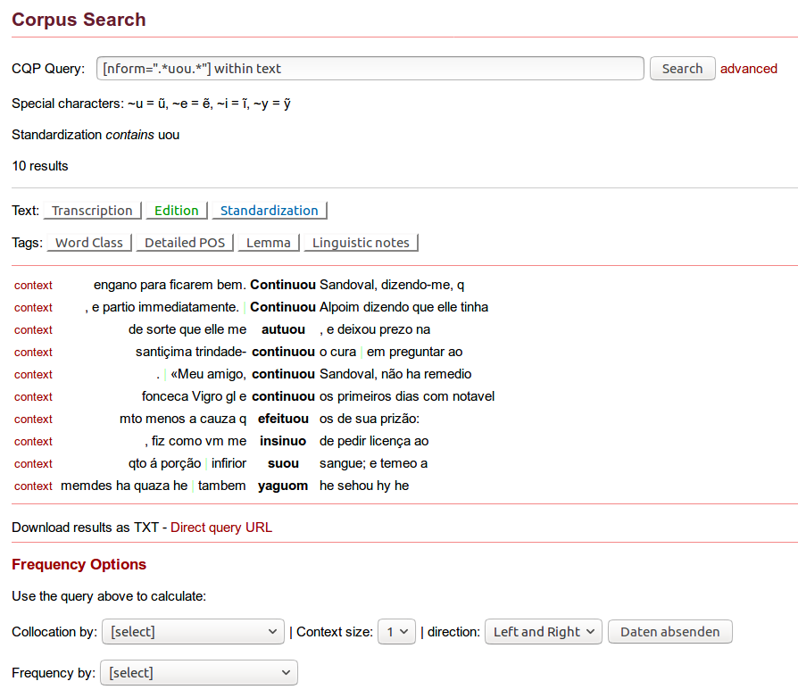
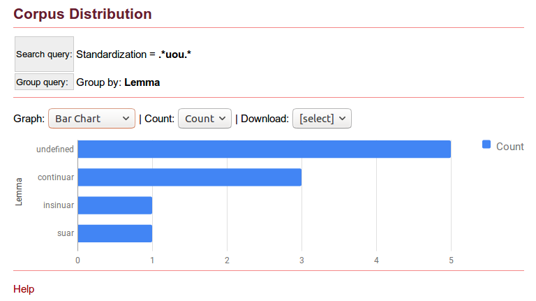 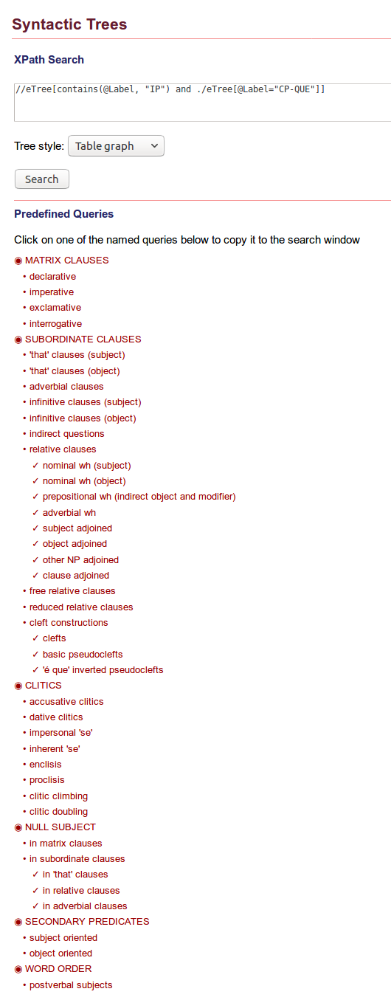
Both for the general corpus search and for the syntactic search, basic help texts are offered. Not every search option is explained but the information that is given helps the user to find his or her way through the search forms when using the various access points that are offered to explore P. S. Post Scriptum as a linguistic corpus.
Altogether, a remarkable range and amount of linguistic information has been added to the edited texts of the letters and it has been integrated convincingly into the entire text collection. The many possibilities to search for specific linguistic annotations, to view them in the context of the transcribed documents and to download almost all of the generated information (the linguistic data itself, the search results, and visualizations of corpus distributions as well as of linguistic details such as single clauses) must be a great asset for a historical corpus linguist. While the rich user interface supports qualitative as well as quantitative work, the option to download all data in text- as well as XML-based formats is ideal for researchers who would like to integrate the data into their own technical workflow.
Long-term prospects
Officially, P. S. Post Scriptum is a finished project. On the website, no comments on the future of the data or the maintenance of the project website itself are found. But even though the funding period ended in 2017, the user manual on the linguistic annotations was still updated in March 2018 and this reviewer got an immediate answer and help from the project coordinator when the website was slowing down during the reviewing process. As the project was based at the Linguistics Centre of the University of Lisbon and is also technically hosted there, the prospects are good that there will be institutional support for this digital text collection also in the future. The graphical user interface is generated with the tool TEITOK, a platform that has already been in use for 14 research projects, so it can be assumed that it will also be maintained further on. Even if the website and user interface should be shut down at some point, the underlying data is held in standard formats and could be kept and used in other environments. Nothing is said on the website about external repositories for the data. It would be an option to additionally store the XML and text data in an infrastructure designed for the long-term, for example at a CLARIN centre.54
In terms of documentation, it has already been said that many publications have been produced in P. S. Post Scriptum contributing to a whole range of disciplines. Not only has the project itself been documented meticulously in the publications and manuals, but its results as a digital scholarly edition and historical linguistic corpus have also already been made fruitful in analytic research contributions by members of the project, securing the transfer of knowledge from the project to the relevant disciplines.
An open question, which all project-based digital resources face, is how to proceed with changes to the data. In P. S. Post Scriptum, the levels of encoding and annotation are not the same for all the data. This has probably various reasons: two different languages that need to be dealt with, data coming from preceding projects, decisions to change annotation procedures, the end of the funding period, and many more. Although the ideal would be to have completely homogenous, completed data, it is even more important to communicate the state of the data clearly to give the users orientation. In addition, an explicit contact address, a contact form, or a ticket system could enable users to report anything that they come across while using the platform. This could even be left unmonitored but would make it possible to collect feedback for those who want to reuse the data or in case there would be a follow-up project.
For the long run, a more explicit and detailed licensing of the data is also important to ensure that other researchers take the opportunity to work with the results of P. S. Post Scriptum. As it is, the project‘s strategy to grant free access to the data but to publish the TEI files under copyright can not be considered an overall Open Access policy (see the discussion of rights issues above).
Conclusion
P. S. Post Scriptum can certainly be classified both as a scholarly digital edition and a diachronic linguistic corpus. It can be considered pioneer work in combining procedures from textual criticism with the linguistic preparation of the corpus — on the levels of the data model, the use of an integrated research environment, and the presentation and possibilities of interaction with the results on the website.
Valuable basic work has been done in collecting, transcribing, and encoding the approximately 5,000 historical private letters kept in archives all over the Iberian Peninsula and making them available to researchers and to the public. The decision to make all basic data available for download is exemplary. An open licence for would have been desirable for data reuse, but still it is very useful to have insight into the data.
The project has followed community standards and advice from similar editorial undertakings, thereby making its data reusable and prepared for the future. The detailed documentation makes up for a partly complex combination of data standards and tools, originating from the project’s history and its double goal to edit the corpus critically and prepare it linguistically.
The site’s usability would have benefitted from more context information directly presented on the website to guide a user not familiar with the project and also to have the latest information about the selection, amount, distribution, and state of the data in one place. It would have been good to include filters for the availability of annotation layers into the search forms (e.g. to only show letters with completed linguistic annotation). On the other hand, some of the many visualization options for statistics and syntactic trees could have been skipped. Still, the range of search options that have been implemented for the graphical user interface is impressive. It could only have been enhanced by more options to browse through the collection of letters.
It is to be hoped that this carefully edited and comprehensively prepared corpus of private correspondence will be maintained and used by many linguists, historians, and digital humanists to come.
Bibliography
- CLUL (ed.). 2014. P. S. Post Scriptum. Arquivo Digital de Escrita Quotidiana em Portugal e Espanha na Época Moderna. Accessed June 1, 2018. http://ps.clul.ul.pt/.
- Gomes, Mariana, Ana Rita Guilherme, Leonor Tavares, and Rita Marquilhas. 2012. “Projects CARDS and FLY: two multidisciplinary projects within Linguistics.” In Proceedings of the Language Resources and Evaluation Conference (LREC 2012). Istanbul: ELRA, 2833-2837. Accessed June 1, 2018. http://www.lrec-conf.org/proceedings/lrec2012/pdf/1031_Paper.pdf.
- Henny-Krahmer, Ulrike and Frederike Neuber. 2017. “Editorial: Reviewing Digital Text Collections.” RIDE 6. doi: 10.18716/ride.a.6.0. Accessed June 1, 2018.
- Janssen, Maarten. 2016. “TEITOK: Text-Faithful Annotated Corpora.” In Proceedings of the Language Resources and Evaluation Conference (LREC 2016). Portoroz: ELRA, 4037-4043. Accessed June 1, 2018. http://www.lrec-conf.org/proceedings/lrec2016/pdf/651_Paper.pdf.
- Jung, Joseph (ed.). 2015. Digitale Briefedition Alfred Escher. Zürich: Alfred Escher-Stiftung. Accessed: June 1, 2018. https://www.briefedition.alfred-escher.ch/.
- Marquilhas, Rita, and Iris Hendrickx. 2016. “Avanços nas humanidades digitais.” In Manual de Linguística Portuguesa, edited by A. M. Martins and Ernestina Carrilho, 252-277. Berlin: De Gruyter.
- Marquilhas, Rita. 2012. “A Historical Digital Archive of Portuguese Letters” In Letter Writing in Late Modern Europe, edited by Marina Dossena and Gabriella Del Lungo Camiciotti, 31-43. Amsterdam: John Benjamins.
- McCarty, Willard. 2005. Humanities Computing. Basingstoke: Palgrave Macmillan.
- Padró, Lluís, and Evgeny Stanislovsky. 2012. “FreeLing 3.0: Towards Wider Multilinguality.” In Proceedings of the Language Resources and Evaluation Conference (LREC 2012). Istanbul: ELRA, 2473-2479. Accessed June 1, 2018. http://www.lrec-conf.org/proceedings/lrec2012/pdf/430_Paper.pdf.
- Paixão de Sousa, Maria Clara, Fábio Natanel Kepler, and Pablo Picasso Feliciano de Faria. 2012. “E-Dictor. Novas perspectivas na codificação e edição de corpora de textos históricos.” In Caminhos da linguística de corpus, edited by Tania Shepherd, Tony Berber Sardinha, and Marcia Veirano Pinto, 191-224. Campinas: Mercado de Letras.
- Schöch, Christof, José Calvo Tello, Ulrike Henny-Krahmer, and Stefanie Popp. "The CLiGS textbox: Building and Using Collections of Literary Texts in Romance Languages Encoded in XML-TEI." Journal of the Text Encoding Initiative (jTEI) (forthcoming).
- Stangl, Werner (ed.). N.d. "En el ojo del huracán": Cartas de Ultramar a España, 1823 - Edición digital. https://web.archive.org/web/20180603144250/http:/www.cartas-de-ultramar.net.
- Stadler, Peter, Marcel Illetschko, and Sabine Seifert. 2016-2017. “Towards a Model for Encoding Correspondence in the TEI: Developing and Implementing <correspDesc>.” Journal of the Text Encoding Init iative 9. doi: 10.4000/jtei.1433. Accessed June 1, 2018. https://journals.openedition.org/jtei/1433.
- Vaamonde, Gael. 2018. “Escritura epistolar, edición digital y anotación de corpus.” Cuadernos del Instituto Historia de la Lengua 11, 139-164. Accessed June 1, 2018. https://www.cilengua.es/tienda/publicacion/cuadernos-del-instituto-historia-de-la-lengua-2018-no11.
- Vaamonde, Gael. 2017a. “Cartas olvidadas, fuentes explotadas. Edición y anotación de un corpus histórico epistolar.” In Congreso HDH2017. Libro de resúmenes, edited by Nuria Rodríguez Ortega. Málaga: Universidad de Málaga, 212-215. Accessed June 1, 2018. http://hdh2017.es/wp-content/uploads/2017/10/Actas-HDH2017.pdf.
- Vaamonde, Gael. 2017b. Guía para la Edición Digital de Textos en P. S. Post Scriptum. Lisboa: Centro de Linguística da Universidade de Lisboa. Accessed June 1, 2018. http://ps.clul.ul.pt/files/Manual_PS.pdf.
- Vaamonde, Gael. 2017c. Userguide for Digital Edition of Texts in P. S. Post Scriptum. Translated by Clara Pinto. Lisboa: Centro de Linguística da Universidade de Lisboa. Accessed June 1, 2018. http://ps.clul.ul.pt/files/Manual_PS_english.pdf.
- Vaamonde, Gael. 2015a. “P. S. Post Scriptum: Dos corpus diacrónicos de escritura cotidiana.” Procesamiento del Lenguaje Natural 55: 57-64. Accessed June 1, 2018. http://journal.sepln.org/sepln/ojs/ojs/index.php/pln/article/view/5216/3020.
- Vaamonde, Gael. 2015b. “Limitaciones en el uso de corpus diacrónicos del español. Nuevas aportaciones desde el proyecto de investigación Post Scriptum.” E-Aesla 1, [1-10]. Accessed June 1, 2018. http://cvc.cervantes.es/lengua/eaesla/eaesla_01.htm.
- Vaamonde, Gael, Ana Luísa Costa, Rita Marquilhas, Clara Pinto, and Fernanda Pratas. 2014. “Post Scriptum: Archivo Digital de Escritura Cotidiana.” In Humanidades Digitales: desafíos, logros y perspectivas de futuro, edited by Sagrario López Poza and Nieves Pena Sueiro. Janus, Anexo 1, 473-482. Accessed June 1, 2018. http://www.janusdigital.es/anexo.htm?id=5.
- Vaamonde, Gael, and Catarina Magro. 2018. Manual de Edición y Anotación en TEITOK de los Materiales de P. S. Post Scriptum: Edición Modernizada, Anotación Morfosintáctica (POS), Anotación Sintáctica (en portugués). Accessed June 1, 2018. http://ps.clul.ul.pt/files/Manual_Mod_Pos_Sin.pdf.
Notes
- A form of language used for a particular purpose or in a particular social setting. ↑
- Cf. “Project P. S. Post Scriptum.” CLUL 2014. https://web.archive.org/web/20180602124555/http:/ps.clul.ul.pt/, and Vaamonde 2015a: 58. ↑
- Cf. “1553. Carta de María de Espinosa para su esposo Francisco de Leguizamo.” CLUL 2014. https://web.archive.org/web/20180602124423/http:/ps.clul.ul.pt/index.php?action=file&cid=PS7004. ↑
- A description of this project, which was sponsored by the national Portuguese funding institution FCT, can be found on the website of the Linguistics Centre of the University of Lisbon (Cf. “CARDS - Unknown Letters.” Centro de Linguística da Universidade de Lisboa. 2018. https://web.archive.org/web/20180602131349/http:/www.clul.ulisboa.pt/en/researchers/10-research/705-cards-unknown-letters), but an individual website for the CARDS project is not accessible anymore, since it segued into the P. S. Post Scriptum project (all the links that the reviewer found are redirected to the P. S. project website). ↑
- General information about the FLY project can also be found at “FLY - Forgotten Letters 1900-1974.” Centro de Linguística da Universidade de Lisboa. 2018. https://web.archive.org/web/20180602151532/http:/www.clul.ulisboa.pt/en/10-research/703-fly-1900-1974. There is also an umbrella page for all three projects. See https://web.archive.org/web/20180603133455/http:/cards-fly.clul.ul.pt/. ↑
- Cf. Gomes et al. 2011. ↑
- The results published on the FLY website will only be taken into account occasionally, where they reveal shifts in the methodology and publication strategy when compared to P. S. Post Scriptum. ↑
- For someone not familiar with the history of the projects, it can be confusing that the credits list is divided into two parts and that it mentions the CARDS project at all. It would be helpful to include a brief explanation of the relationship between the two projects into the website to make it self-contained, because currently this information cannot be found on the credits page, nor anywhere else on the P. S. Post Scriptum website. ↑
- “Credits.” CLUL 2014. https://web.archive.org/web/20180602160832/http:/ps.clul.ul.pt/index.php?action=ficha. ↑
- This review therefore draws on both catalogues of criteria developed by the IDE, the Criteria for Reviewing Scholarly Digital Editions (http://www.i-d-e.de/publikationen/weitereschriften/criteria-version-1-1/. Accessed June 1, 2018) and the Criteria for Reviewing Digital Text Collections (https://www.i-d-e.de/publikationen/weitereschriften/criteria-text-collections-version-1-0/. Accessed June 1, 2018), the latter including criteria for the assessment of linguistic corpora. Because the review is published in an issue on scholarly digital editions, the accompanying factsheet is only about editorial aspects, though. Interestingly, P. S. Post Scriptum labels itself “A Digital Archive”, avoiding the terms “edition” and “corpus” and placing the focus on the organizational, institutional, and preservational dimension instead of the methodological orientation of the selection and treatment of documents and texts. Similar observations are made for other digital resources in the editorial of RIDE 6. Cf. Henny-Krahmer and Neuber 2017. ↑
- No documentation was found on this aspect of the resource.In the XML files of the letters only the language of translations is marked but the metadata language is not indicated with a language attribute (@xml:lang). Only the language of translations is marked. ↑
- Once there, the only way to get back to the original language version is the back button of the browser. It would have been nice to also have a button to switch the metadata language back, but this is just a small inconvenience. ↑
- “If there is no translation for the letter itself, you may copy the text (while using the view 'Standardization') and paste it to an automatic translator of your choice.” “1553. Carta de María de Espinosa para su esposo Francisco de Leguizamo.” CLUL 2014. https://web.archive.org/web/20180602124423/http:/ps.clul.ul.pt/index.php?action=file&cid=PS7004. ↑
- See “1756. Carta de José da Costa Martins para o seu pai, Luís da Costa Martins, negociante.” CLUL 2014. https://web.archive.org/web/20180605124518/http:/ps.clul.ul.pt/index.php?action=file&cid=PSCR0647&tpl=translation for an example of a letter with a translation into English (found by typing “I have” into the Raw corpus search). ↑
- Here, “backend” is understood as a non-public part of the website. ↑
- Cf. “Word distribution.” CLUL 2014. https://web.archive.org/web/20180603155606/http:/ps.clul.ul.pt/index.php?action=cqp&act=distribute. ↑
- Cf. “Raw corpus search.” CLUL 2014. https://web.archive.org/web/20180603155850/http:/ps.clul.ul.pt/en/index.php?action=rawsearch. ↑
- Cf. “Related Projects.” CLUL 2014. https://web.archive.org/web/20180603143435/http:/ps.clul.ul.pt/en/index.php?action=links. ↑
- See Stangl n.d. and Ultramar. 2014. https://web.archive.org/web/20180603144610/http:/cards-fly.clul.ul.pt/teitok/ultramar/. ↑
- Cf. “Publicações / Publicaciones / Papers”. CLUL 2014. https://web.archive.org/web/20180603145629/http:/ps.clul.ul.pt/en/index.php?action=papers. ↑
- Cf. “Word distribution.” CLUL 2014. https://web.archive.org/web/20180603155606/http:/ps.clul.ul.pt/index.php?action=cqp&act=distribute. ↑
- These are most probably: Gomes et al. 2012, Marquilhas 2012 (about the Portuguese letters and the CARDS and FLY projects), Vaamonde et al. 2014, Vaamonde 2015a, Vaamonde 2015b, Vaamonde 2017a, Vaamonde 2018 (about P. S. Post Scriptum and partly with a focus on the Spanish subcorpus), plus some presentations. ↑
- In this case, of the ones concerned with the description of P. S. Post Scriptum or its predecessors, six are freely accessible online, one is not. ↑
- See https://web.archive.org/web/20180605131619/http:/ps.clul.ul.pt/files/Manual_PS.pdf. ↑
- See https://web.archive.org/web/20180605133414/http:/ps.clul.ul.pt/files/Manual_PS_english.pdf. ↑
- See https://web.archive.org/web/20180605133516/http:/ps.clul.ul.pt/files/Manual_Mod_Pos_Sin.pdf. ↑
- This was finally achieved in 2015 with the TEI-P5 release 2.8.0. Cf. Stadler et al. 2016-2017. ↑
- See http://ctb.kantl.be/project/dalf/. Accessed June 1, 2018. ↑
- Cf. Vaamonde 2017c: 5f. The website of the CHARTA network is available at http://www.redcharta.es/. Accessed June 1, 2018. ↑
- See http://www.teitok.org/. Accessed June 1, 2018. ↑
- Cf. Vaamonde 2017c: 83f. and 107-118. ↑
- See http://letters1916.maynoothuniversity.ie/. Accessed June 1, 2018. ↑
- Cf. Jung 2015. ↑
- See https://web.archive.org/web/20180606164919/http:/ps.clul.ul.pt/index.php?action=downloads. ↑
- See https://web.archive.org/web/20180606170241/https:/ride.i-d-e.de/data/charts/. ↑
- The format suitable for the TEITOK environment. ↑
- The balanced corpus is created by selecting only one letter per author. ↑
- See https://correspsearch.net/. Accessed June 1, 2018. ↑
- “For the benefit of researchers who want to deal with our data using external tools, we offer them below in a text format.” https://web.archive.org/web/20180606164919/http:/ps.clul.ul.pt/index.php?action=downloads. ↑
- See Vaamonde 2017c, 64ff. for details. ↑
- See https://web.archive.org/web/20180607152620/http:/ps.clul.ul.pt/index.php?action=cqp&act=advanced. ↑
- Vaamonde 2018: 152. Translated from Spanish by the reviewer. ↑
- See Padró and Stanilovsky 2012 and Piaxão de Sousa et al. 2012. ↑
- Cf. Vaamonde 2018: 153. ↑
- Similar experiences have been made in the project Computational Literary Genre Stylistics (CLiGS) that the reviewer is part of. In CLiGS, it was decided to keep two versions of the corpora of literary texts: a master version with structural and inline TEI encoding and a linguistically annotated version where FreeLing output in XML format is incorporated into a basic TEI structure. Cf. Schöch et al. (forthcoming) and https://github.com/cligs/textbox. Accessed June 1, 2018. ↑
- See Janssen 2016. ↑
- See Vaamonde and Magro 2018 for details about the meaning of the various attributes used in the linguistic annotation. ↑
- Cf. http://www.ilc.cnr.it/EAGLES/browse.html. Accessed June 1, 2018. ↑
- Cf. https://web.archive.org/web/20180608101655/http:/ps.clul.ul.pt/index.php?action=tagset. ↑
- See http://www.ling.upenn.edu/hist-corpora/annotation/index.html, http://www.tycho.iel.unicamp.br/~tycho/corpus/en/, http://www.clul.ulisboa.pt/en/10-research/307-cordial-sin-project-description, and http://alfclul.clul.ul.pt/wochwel/. Accessed June 1, 2018. ↑
- See Vaamonde and Magro 2018. ↑
- Ibd.: 72-81. ↑
- In this case, the lemmas for the words “autuou”, “efetuou”, and “jejuou” were not recognized. “Continuou” occurred five times in the search results, but was only lemmatized in three cases. The results in this example might have been influenced by files where the annotation has not been finished. ↑
- See https://www.clarin.eu/content/repositories. Accessed June 1, 2018. ↑
@article{ps,
author = {Henny-Krahmer, Ulrike},
title = {Bridging edition and corpus: a review of P. S. Post Scriptum: A Digital
Archive of Ordinary Writing (Early Modern Portugal and Spain)},
journal = {RIDE – A review journal for digital editions and resources},
number = {10},
year = {2019},
doi = {10.18716/ride.a.10.4},
url = {https://doi.org/10.18716/ride.a.10.4},
}TY - JOUR
AU - Henny-Krahmer, Ulrike
TI - Bridging edition and corpus: a review of P. S. Post Scriptum: A Digital
Archive of Ordinary Writing (Early Modern Portugal and Spain)
T2 - RIDE – A review journal for digital editions and resources
IS - 10
PY - 2019
DA - 2019/06
DO - 10.18716/ride.a.10.4
UR - https://doi.org/10.18716/ride.a.10.4
PB - Institut für Dokumentologie und Editorik e. V.
LA - en
ER - Henny-Krahmer, U. (2019). Bridging edition and corpus: a review of P. S. Post Scriptum: A Digital
Archive of Ordinary Writing (Early Modern Portugal and Spain). RIDE – A review journal for digital editions and resources, (10). https://doi.org/10.18716/ride.a.10.4Henny-Krahmer, Ulrike. "Bridging edition and corpus: a review of P. S. Post Scriptum: A Digital
Archive of Ordinary Writing (Early Modern Portugal and Spain)." RIDE – A review journal for digital editions and resources, no. 10, 2019. https://doi.org/10.18716/ride.a.10.4.Henny-Krahmer, Ulrike. "Bridging edition and corpus: a review of P. S. Post Scriptum: A Digital
Archive of Ordinary Writing (Early Modern Portugal and Spain)." RIDE – A review journal for digital editions and resources, no. 10 (2019). https://doi.org/10.18716/ride.a.10.4.